EPS დეკორატიული ელემენტები ფასადისთვის
ვაწარმოებთ კარნიზებს, სვეტებს, კუთხის ქვებს, ფასადის პანელებს და თაღებს გაფართოებული პოლისტირონისგან (EPS). წარმოება საქართველოშია, მიწოდება მთელი ქვეყნის მასშტაბით.
მოითხოვეთ ფასი პროდუქციის ნახვა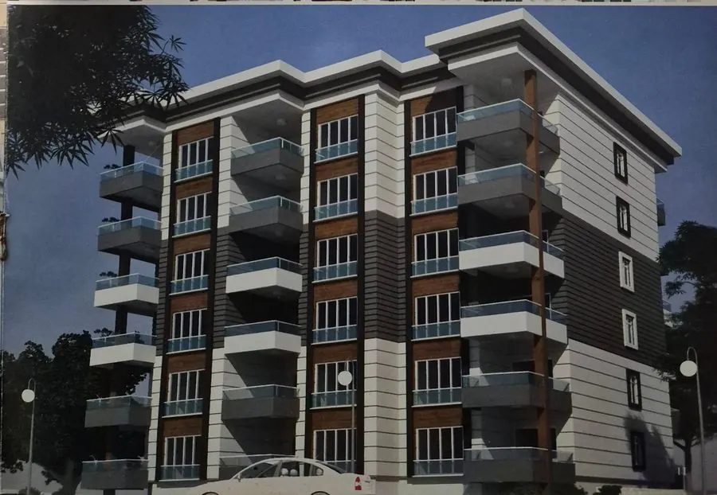
კარნიზები და სოველები
ფასადის ჰორიზონტალური პროფილები ფანჯრის გარშემო, სართულთაშორისი და სახურავის ხაზზე.
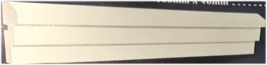
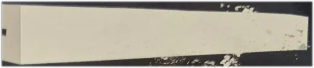
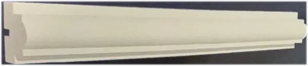
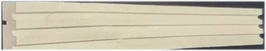
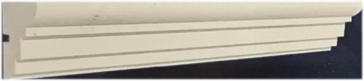
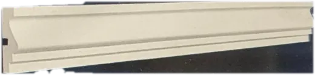
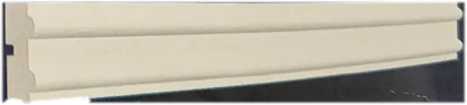
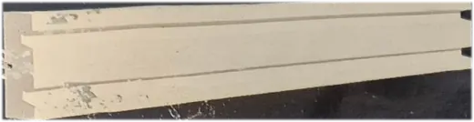
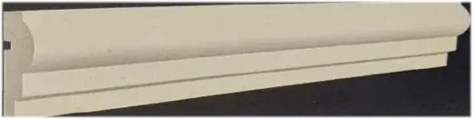
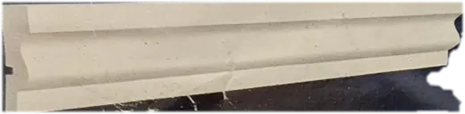
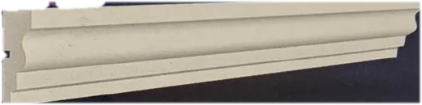
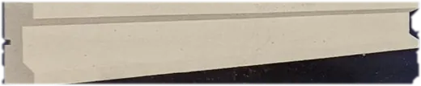
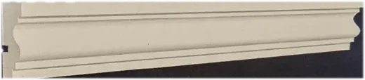
ფანჯრის საპირეები
ფანჯრის ქვედა ხაზისა და ჩარჩოს პროფილები.
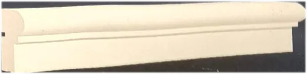
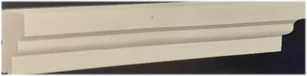
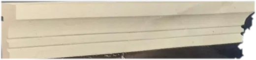
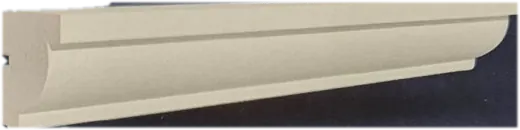
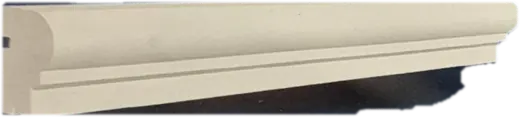
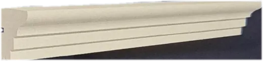
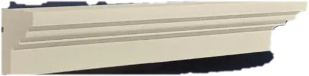
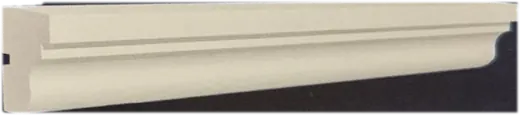
ფართო კარნიზები
დიდი გამოშვების კარნიზები, მათ შორის ორნამენტული ვარიანტები.
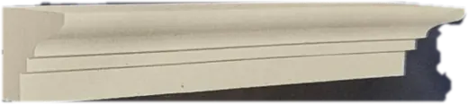
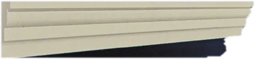
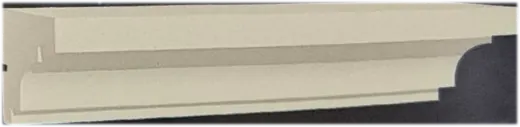
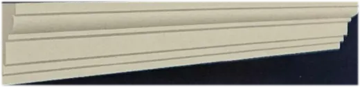
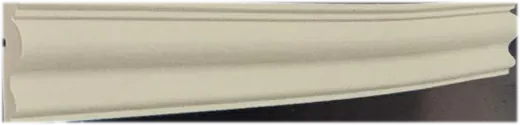
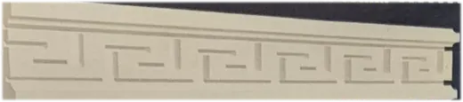
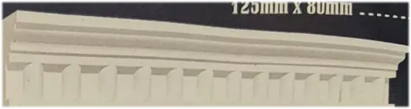
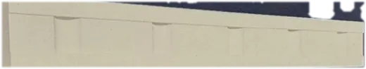
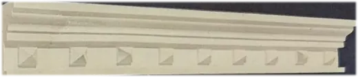
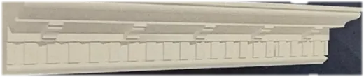
ფანჯრის გაფორმების კომპლექტები
ფანჯრის გარშემო პროფილებისა და დეკორატიული ელემენტების მაგალითები.
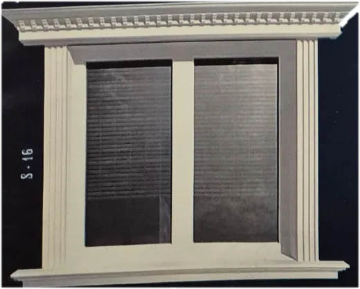
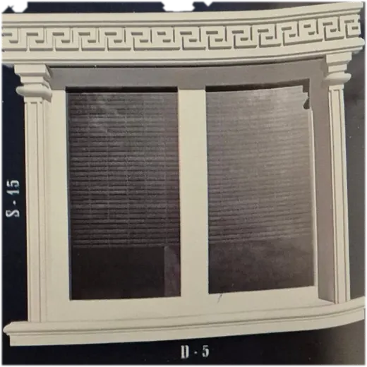
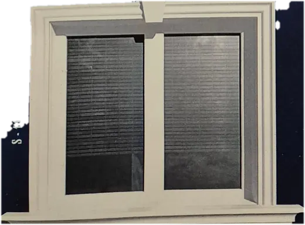
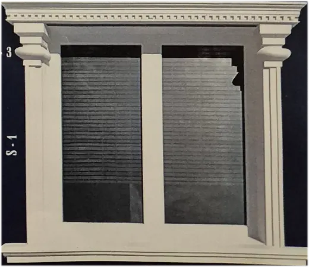
ფანჯრის საყრდენი ქვები
ფანჯრის ქვედა ნაწილის დეკორატიული საყრდენები.
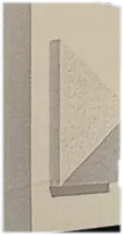
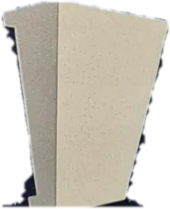
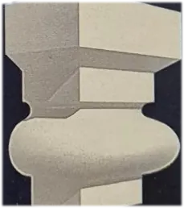
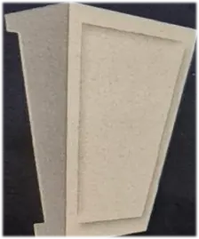
სვეტები
გლუვი და ღარებიანი სვეტები.
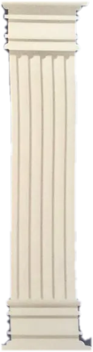
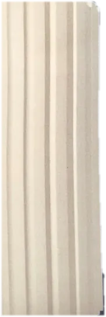
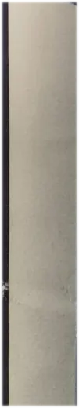
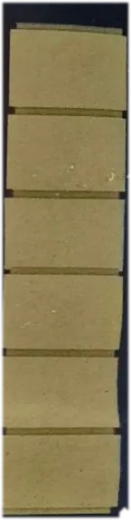
სვეტის ბაზები და კაპიტელები
სვეტებისა და კოლონების ზედა და ქვედა დეკორატიული ნაწილები.
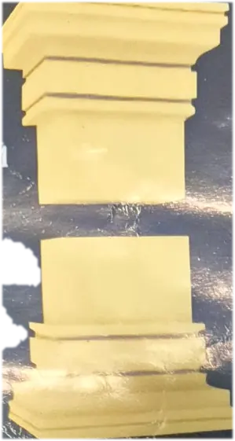
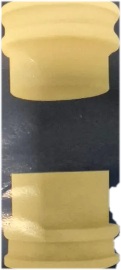
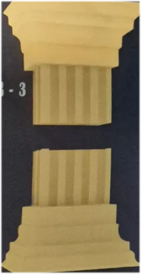
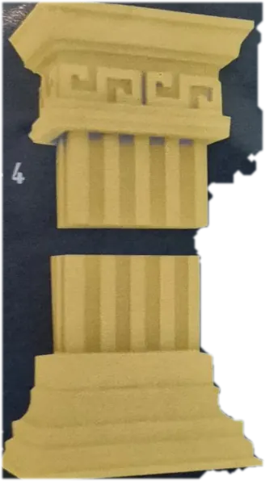
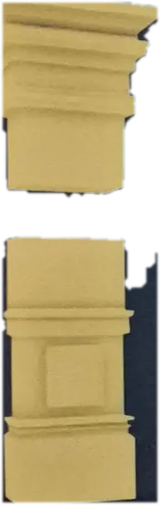
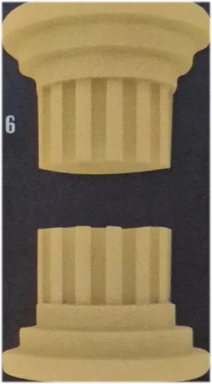
კუთხის ქვები
შენობის შიდა და გარე კუთხეების გასაფორმებელი ელემენტები.
ფასადის პანელები
აგურის, ქვის, ხისა და გეომეტრიული ტექსტურის პანელები.
ფასადის გარსაცმები
ჰორიზონტალური ღარებით, ფასადის გადასაფარებლად.
თაღები და კრონშტეინები
თაღები ზომის მიხედვით, ფანჯრისა და აივნის გასაფორმებელი საყრდენები.
ფანჯრის თავსართები
ფანჯრის ზემოთ დასამაგებელი ორნამენტული ელემენტები.
ფასადის მაგალითები
EPS ელემენტებით გაფორმებული ფასადები.
რატომ EPS
მსუბუქია
ელემენტები ფასადს დიდ დატვირთვას არ უმატებს და მათი აწევა და დამაგრება მარტივია.
სწრაფი მონტაჟი
დამაგრება ხდება წებოვანი ხსნარით, საჭიროებისამებრ დუბელებით.
ბევრი ფორმა
პროფილები, სვეტები, კუთხის ქვები, თაღები და ორნამენტული ელემენტები.
ადგილობრივი წარმოება
ზომებისა და ვადების დაზუსტება შეგიძლიათ პირდაპირ მწარმოებელთან.
როგორ შევუკვეთოთ
- გამოგვიგზავნეთ ფასადის ფოტო, ნახაზი ან სასურველი მოდელების სია.
- დავაზუსტებთ ზომებს, რაოდენობასა და ვადას.
- გაგიგზავნით ფასს.
- დადასტურების შემდეგ ვამზადებთ და გიგზავნით შეკვეთას.
ხშირად დასმული კითხვები
რა არის EPS ფასადის დეკორი?
ეს არის გაფართოებული პოლისტირონისგან (EPS) დამზადებული მსუბუქი დეკორატიული ელემენტები შენობის ფასადისთვის: კარნიზები, სვეტები, ფანჯრის საპირეები, კუთხის ქვები და პანელები.
რით განსხვავდება EPS დეკორი ბეტონის ან თაბაშირის დეკორისგან?
EPS ელემენტები გაცილებით მსუბუქია, ამიტომ ფასადზე დამატებით დატვირთვას ნაკლებად ქმნის, მისი მონტაჟი კი უფრო სწრაფია.
როგორ მაგრდება EPS დეკორი ფასადზე?
ელემენტები ფასადზე მაგრდება სპეციალური წებოვანი ხსნარით, საჭიროების შემთხვევაში დუბელებით. შემდეგ ზედაპირი იფარება დამცავი ფენით და იღებება.
შესაძლებელია თუ არა სხვა ზომის ან ფორმის ელემენტის შეკვეთა?
დაგვიკავშირდით და გამოგვიგზავნეთ ესკიზი ან ზომები. გეტყვით, რა შეიძლება დამზადდეს. თაღებს ვამზადებთ მოთხოვნილი ზომით.
როგორ გავიგო ფასი?
ფასი დამოკიდებულია პროფილზე, ზომასა და რაოდენობაზე. გამოგვიგზავნეთ ფასადის ფოტო ან ნახაზი და გამოგიანგარიშებთ.
კონტაქტი
- ტელეფონი
- +995 XXX XX XX XX
- ელფოსტა
- info@example.ge
- მისამართი
- [ქალაქი, ქუჩა, ნომერი]
- სამუშაო საათები
- [ორშაბათი – შაბათი, 09:00 – 18:00]
- [გვერდის ბმული]